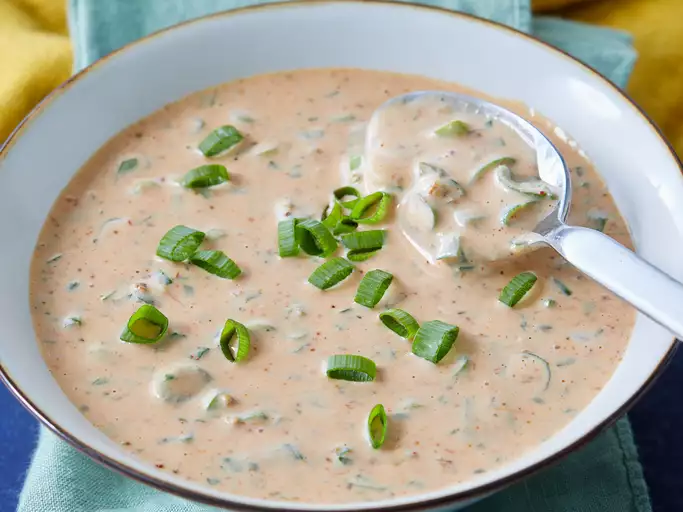

Remoulade Sauce

What is Remoulade Sauce?
Ingredients
- 1 cup mayonnaise
- 1/4 cup chili sauce
- 2 tablespoons Creole mustard
- 2 tablespoons extra-virgin olive oil
- 2 tablespoons fresh lemon juice
- 1 tablespoon Louisiana-style hot sauce, or to taste
- 1 teaspoon Worcestershire sauce
- 4 medium scallions, chopped
- 2 tablespoons chopped fresh parsley
- 2 tablespoons chopped green olives
- 2 tablespoons minced celery
- 1 teaspoon capers, chopped
- 1 clove garlic, minced
- 1 teaspoon salt, or to taste
- 1/2 teaspoon chili powder
- 1/2 teaspoon ground black pepper
Directions
- Mix together mayonnaise, chili sauce, mustard, olive oil, lemon juice, hot sauce, and Worcestershire in a medium bowl. Stir in scallions, parsley, olives, celery, capers, and garlic. Season with salt, chili powder, and black pepper.
- Cover, refrigerate, and serve chilled.